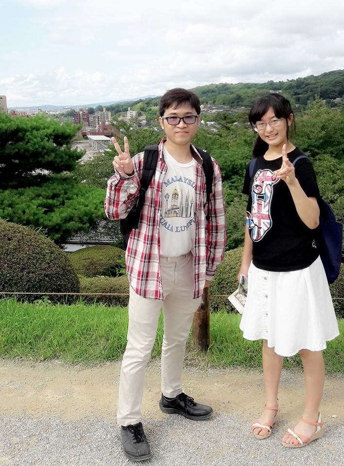
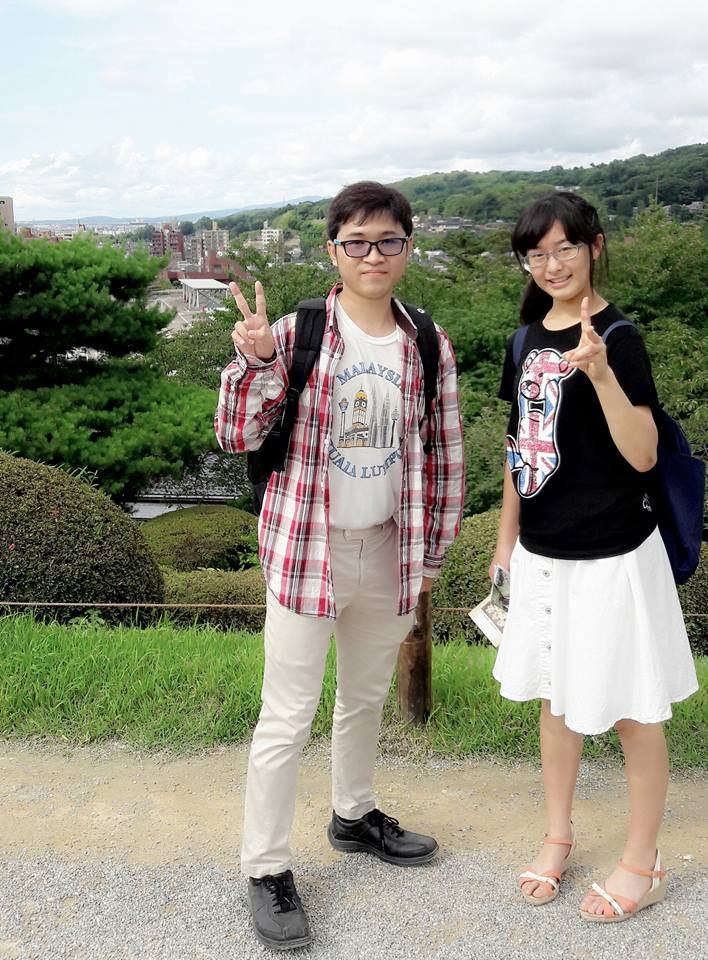

| Name | Picture | Study |
|---|---|---|
| Chiharu |  | International studies |
| Miku |  |
International studies |
| Yosuke |  |
Mathematics |
Even though there is no Japanese inside the laboratory of Bioinformatics, I can still meet new Japanese friends. Throughout this internship program, I have made some Japanese friends from activities inside Kanazawa University such as welcome party, and KISSA events. These activities guided me to meet some friends who can speak English well.
| Name | Picture | Study |
|---|---|---|
| Chiharu |  | International studies |
| Miku | |
International studies |
| Yosuke | |
Mathematics |
In my laboratory, there are five people from different countries who came to Kanazawa University to study doctorer degree in the field of Bioinformatics. They are much older than me. The youngest one is a Vietnamese who continued his study directly after finishing his master degree here.